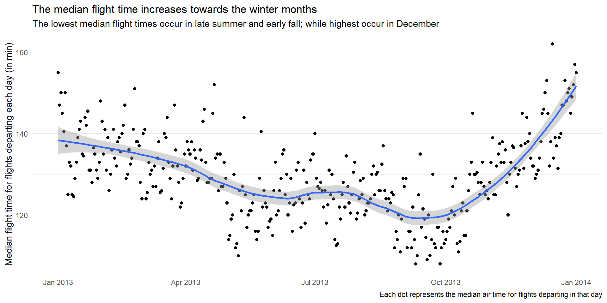
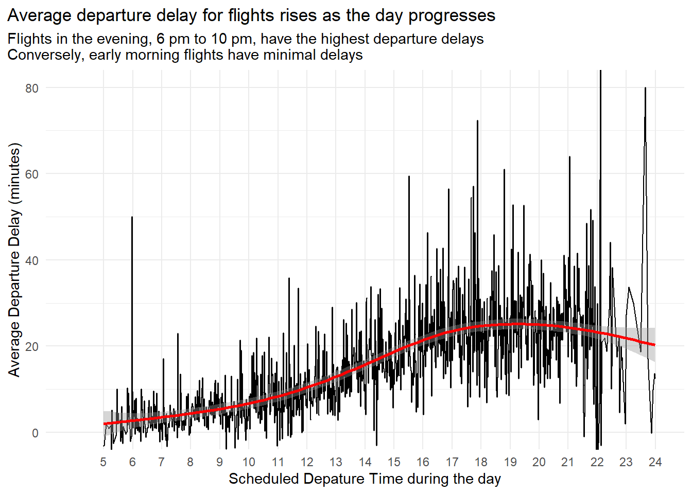
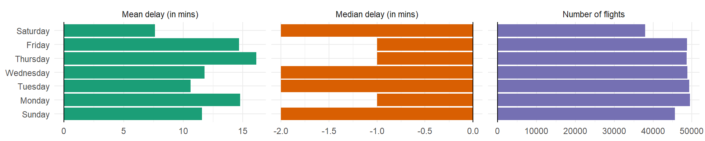
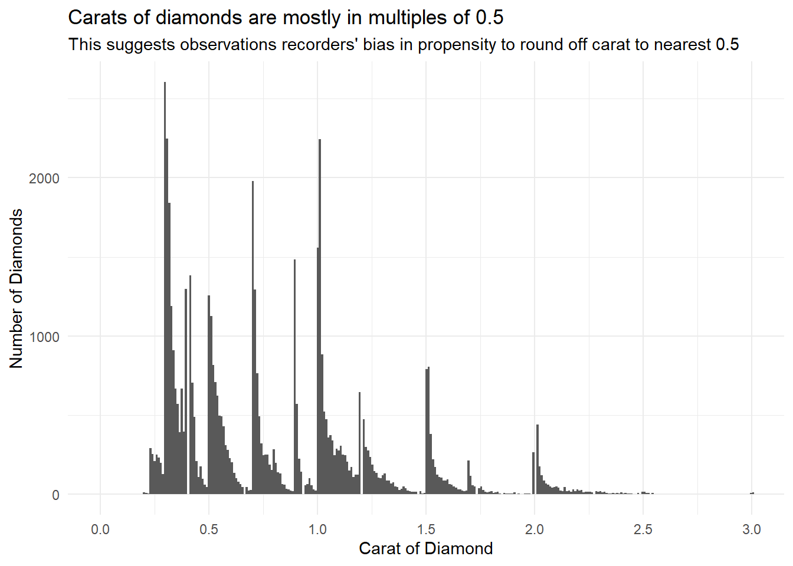
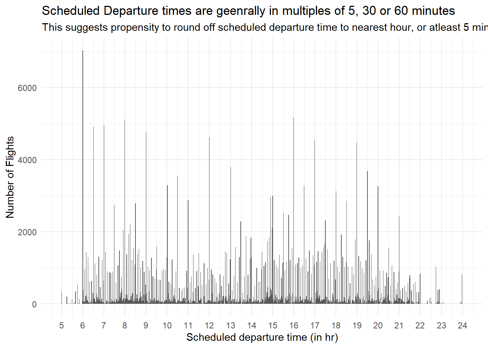

library(tidyverse)
library(nycflights13)
library(lubridate)
data("flights")
library(gt)
library(gtExtras)Chapter 18
Dates and times
All date formats understood by readr
(As taken from the book R for Data Science (2e) and (Grolemund and Wickham 2011a))
| Type | Code | Meaning | Example |
|---|---|---|---|
| Year | %Y |
4 digit year | 2021 |
%y |
2 digit year | 21 | |
| Month | %m |
Number | 2 |
%b |
Abbreviated name | Feb | |
%B |
Full name | February | |
| Day | %d |
Two digits | 02 |
%e |
One or two digits | 2 | |
| Time | %H |
24-hour hour | 13 |
%I |
12-hour hour | 1 | |
%p |
AM/PM | pm | |
%M |
Minutes | 35 | |
%S |
Seconds | 45 | |
%OS |
Seconds with decimal component | 45.35 | |
%Z |
Time zone name | America/Chicago | |
%z |
Offset from UTC | +0800 | |
| Other | %. |
Skip one non-digit | : |
%* |
Skip any number of non-digits |
18.2.5 Exercises
Question 1
What happens if you parse a string that contains invalid dates?
ymd(c("2010-10-10", "bananas"))Whenever a string is parsed, that contains invalid dates, a missing value, i.e., NA will be generated.
ymd(c("2010-10-10", "bananas"))[1] "2010-10-10" NA Question 2
What does the tzone argument to today() do? Why is it important?
The tzone argument aloows us to write “a character vector specifying which time zone you would like the current time in. tzone defaults to your computer’s system timezone.”(Grolemund and Wickham 2011b)
Thus, we can find the date at the current moment in local time zone of the computer system with today() and at any other timezone, say UTC, with today(tzone = "UTC") . It is important when analyzing real-time data, or data from multiples locations across the globe, as the date may not be the same at all places at all times.
A more important role of tzone is with now() as time is different at different zones.
today()[1] "2023-09-17"today(tzone = "UTC")[1] "2023-09-17"now()[1] "2023-09-17 10:57:56 IST"now(tzone = "UTC")[1] "2023-09-17 05:27:56 UTC"Question 3
For each of the following date-times, show how you’d parse it using a readr column specification and a lubridate function.
d1 <- "January 1, 2010"
d2 <- "2015-Mar-07"
d3 <- "06-Jun-2017"
d4 <- c("August 19 (2015)", "July 1 (2015)")
d5 <- "12/30/14" # Dec 30, 2014
t1 <- "1705"
t2 <- "11:15:10.12 PM"The parsing of date and time from these values is shown below: —
d1 <- "January 1, 2010"
d2 <- "2015-Mar-07"
d3 <- "06-Jun-2017"
d4 <- c("August 19 (2015)", "July 1 (2015)")
d5 <- "12/30/14" # Dec 30, 2014
t1 <- "1705"
t2 <- "11:15:10.12 PM"
df = tibble(d1, d2, d3, d4, d5, t1, t2) |>
slice(1)
df |>
mutate(
d1 = mdy(d1),
d2 = ymd(d2),
d3 = dmy(d3),
d4 = mdy(d4),
d5 = mdy(d5),
t1 = hm(paste0(as.numeric(t1) %/% 100, ":", as.numeric(t1) %% 100)),
t2 = hms(t2)
)# A tibble: 1 × 7
d1 d2 d3 d4 d5 t1
<date> <date> <date> <date> <date> <Period>
1 2010-01-01 2015-03-07 2017-06-06 2015-08-19 2014-12-30 17H 5M 0S
# ℹ 1 more variable: t2 <Period>18.3.4 Exercises
Question 1
How does the distribution of flight times within a day change over the course of the year?
The distribution of flight times within a day change over the course of the year is displayed in Figure 1 . To check whether this is due to only some extraordinarily delayed flights, or due to longer flight times in general, we can plot the median, instead of mean, as shown in Figure 2 . Both plots provide the same conclusion, as explained there-in.
Code
flights |>
mutate(
dep_time = make_datetime(year, month, day, dep_time %/% 100, dep_time %% 100),
dep_day = round_date(dep_time, unit = "day")
) |>
group_by(dep_day) |>
summarise(mean_air_time = mean(air_time, na.rm = TRUE)) |>
ggplot(aes(x = dep_day,
y = mean_air_time)) +
geom_point() +
geom_smooth(span = 0.5) +
theme_minimal() +
labs(y = "Average flight time for flights departing each day (in min)",
x = NULL,
title = "The average flight time increases towards the winter months",
subtitle = "The lowest average flight times occur in late summer and early fall; while highest occur in December",
caption = "Each dot represents the mean air time for flights departing in that day") +
theme(panel.grid.major.x = element_blank(),
panel.grid.minor.x = element_blank())
Code
flights |>
mutate(
dep_time = make_datetime(year, month, day, dep_time %/% 100, dep_time %% 100),
dep_day = round_date(dep_time, unit = "day")
) |>
group_by(dep_day) |>
summarise(median_air_time = median(air_time, na.rm = TRUE)) |>
ggplot(aes(x = dep_day,
y = median_air_time)) +
geom_point() +
geom_smooth(span = 0.5) +
theme_minimal() +
labs(y = "Median flight time for flights departing each day (in min)",
x = NULL,
title = "The median flight time increases towards the winter months",
subtitle = "The lowest median flight times occur in late summer and early fall; while highest occur in December",
caption = "Each dot represents the median air time for flights departing in that day") +
theme(panel.grid.major.x = element_blank(),
panel.grid.minor.x = element_blank())
Question 2
Compare dep_time, sched_dep_time and dep_delay. Are they consistent? Explain your findings.
f1 = flights |>
select(-hour, -minute, -time_hour) |>
filter(!is.na(dep_time) & !is.na(arr_time) & !is.na(sched_dep_time)) |>
mutate(
dep_time = make_datetime(year, month, day, dep_time %/% 100, dep_time %% 100),
sched_dep_time = make_datetime(year, month, day, sched_dep_time %/% 100, sched_dep_time %% 100),
dep_delay_calc = dep_time - sched_dep_time,
comparison = dep_delay_calc/60 == dep_delay,
.keep = "used"
)
f1 |>
slice_head(n = 5) |>
gt() |>
gt_theme_538()| year | month | day | dep_time | sched_dep_time | dep_delay | dep_delay_calc | comparison |
|---|---|---|---|---|---|---|---|
| 2013 | 1 | 1 | 2013-01-01 05:17:00 | 2013-01-01 05:15:00 | 2 | 120 | TRUE |
| 2013 | 1 | 1 | 2013-01-01 05:33:00 | 2013-01-01 05:29:00 | 4 | 240 | TRUE |
| 2013 | 1 | 1 | 2013-01-01 05:42:00 | 2013-01-01 05:40:00 | 2 | 120 | TRUE |
| 2013 | 1 | 1 | 2013-01-01 05:44:00 | 2013-01-01 05:45:00 | -1 | -60 | TRUE |
| 2013 | 1 | 1 | 2013-01-01 05:54:00 | 2013-01-01 06:00:00 | -6 | -360 | TRUE |
Now, when we compute the percentage of observations where dep_delay == dep_delay_calc , we get only 99.63%. This means that for 0.36% of flights, the calculation doesn’t match. We need to explore these further.
mean(f1$comparison) * 100[1] 99.63269## Code Part 1
f1 |>
filter(!comparison)# A tibble: 1,205 × 8
year month day dep_time sched_dep_time dep_delay
<int> <int> <int> <dttm> <dttm> <dbl>
1 2013 1 1 2013-01-01 08:48:00 2013-01-01 18:35:00 853
2 2013 1 2 2013-01-02 00:42:00 2013-01-02 23:59:00 43
3 2013 1 2 2013-01-02 01:26:00 2013-01-02 22:50:00 156
4 2013 1 3 2013-01-03 00:32:00 2013-01-03 23:59:00 33
5 2013 1 3 2013-01-03 00:50:00 2013-01-03 21:45:00 185
6 2013 1 3 2013-01-03 02:35:00 2013-01-03 23:59:00 156
7 2013 1 4 2013-01-04 00:25:00 2013-01-04 23:59:00 26
8 2013 1 4 2013-01-04 01:06:00 2013-01-04 22:45:00 141
9 2013 1 5 2013-01-05 00:14:00 2013-01-05 23:59:00 15
10 2013 1 5 2013-01-05 00:37:00 2013-01-05 22:30:00 127
# ℹ 1,195 more rows
# ℹ 2 more variables: dep_delay_calc <drtn>, comparison <lgl>## Code Part 2
f1 |>
filter(!comparison) |>
filter(dep_delay_calc > 0)# A tibble: 0 × 8
# ℹ 8 variables: year <int>, month <int>, day <int>, dep_time <dttm>,
# sched_dep_time <dttm>, dep_delay <dbl>, dep_delay_calc <drtn>,
# comparison <lgl>Now, after seeing results of ## Code Part 1, we realize that some flights are so delayed that their scheduled departure time goes over to the next day, and this, unfortunately we did not figure in our calculations. To further confirm, using ## Code Part II , we confirm that the only mismatches are the ones where calculated departure delay is negative.
Hence, we need to re-work our calculations, as follows: —
## Create new tibble from flights with datetime columns
f2 = flights |>
select(-hour, -minute, -time_hour) |>
filter(!is.na(dep_time) & !is.na(arr_time) & !is.na(sched_dep_time)) |>
mutate(
dep_time = make_datetime(year, month, day, dep_time %/% 100, dep_time %% 100),
sched_dep_time = make_datetime(year, month, day, sched_dep_time %/% 100, sched_dep_time %% 100)
)
## Check range of dep_delay: to understand how early can a flight depart from scheduled time
## The earliest is -43 min, i.e., 43 min early
range(f2$dep_delay)[1] -43 1301## Now, change the departure time into +1 day, if the dep_time is earlier than scheduled time
## by more than 45 min
f2 = f2 |>
mutate(
dep_time = if_else(dep_time < sched_dep_time - minutes(45),
true = dep_time + days(1),
false = dep_time),
dep_delay_calc = dep_time - sched_dep_time,
dep_delay_calc = dep_delay_calc/60,
comparison = dep_delay_calc == dep_delay
)
## Percentage of cases where our calculated departure delay is exactly same as dep_delay column
mean(f2$comparison) * 100[1] 100Thus, we realize that our 100% of our calculations match, once we factor in the flights departing the next day from their scheduled date as reflected in Table 2.
## Show some flights delayed so much that they depart the next day, to see comparison
f2 |>
filter(day(dep_time) != day(sched_dep_time)) |>
select(year, month, day, dep_time, sched_dep_time,
carrier, tailnum, dep_delay, dep_delay_calc,
comparison) |>
slice_head(n = 5) |>
gt() |>
gt_theme_538()| year | month | day | dep_time | sched_dep_time | carrier | tailnum | dep_delay | dep_delay_calc | comparison |
|---|---|---|---|---|---|---|---|---|---|
| 2013 | 1 | 1 | 2013-01-02 08:48:00 | 2013-01-01 18:35:00 | MQ | N942MQ | 853 | 853 | TRUE |
| 2013 | 1 | 2 | 2013-01-03 00:42:00 | 2013-01-02 23:59:00 | B6 | N580JB | 43 | 43 | TRUE |
| 2013 | 1 | 2 | 2013-01-03 01:26:00 | 2013-01-02 22:50:00 | B6 | N636JB | 156 | 156 | TRUE |
| 2013 | 1 | 3 | 2013-01-04 00:32:00 | 2013-01-03 23:59:00 | B6 | N763JB | 33 | 33 | TRUE |
| 2013 | 1 | 3 | 2013-01-04 00:50:00 | 2013-01-03 21:45:00 | B6 | N329JB | 185 | 185 | TRUE |
Question 3
Compare air_time with the duration between the departure and arrival. Explain your findings. (Hint: consider the location of the airport.)
If we compare the air_time with duration between departure time and arrival time, we get hardly 0.06% matches, even after adjusting for dep_times that occur on the next day, or arrival times occurring on the next day. This means that something else is going on, perhaps the origin and dest airports are in different time zones.
Code
f3 = flights |>
select(-hour, -minute, -time_hour) |>
filter(!is.na(dep_time) & !is.na(arr_time) & !is.na(air_time)) |>
mutate(
dep_time = make_datetime(year, month, day, dep_time %/% 100, dep_time %% 100),
sched_dep_time = make_datetime(year, month, day, sched_dep_time %/% 100, sched_dep_time %% 100),
dep_time = if_else(dep_time < sched_dep_time - minutes(45),
true = dep_time + days(1),
false = dep_time),
arr_time = make_datetime(year, month, day, arr_time %/% 100, arr_time %% 100),
sched_arr_time = make_datetime(year, month, day, sched_arr_time %/% 100, sched_arr_time %% 100),
air_time_calc = (arr_time - dep_time),
comparison = air_time_calc == air_time
)
f3 |>
select(c(dep_time,
sched_dep_time,
arr_time,
sched_arr_time,
origin,
dest,
air_time,
air_time_calc,
comparison)) |>
slice(200:205) |>
gt() |>
gt_theme_nytimes() |>
tab_style(
style = list(cell_text(weight = "bold")),
locations = cells_body(columns = comparison)
)| dep_time | sched_dep_time | arr_time | sched_arr_time | origin | dest | air_time | air_time_calc | comparison |
|---|---|---|---|---|---|---|---|---|
| 2013-01-01 09:31:00 | 2013-01-01 09:30:00 | 2013-01-01 11:21:00 | 2013-01-01 11:08:00 | LGA | ORD | 154 | 110 | FALSE |
| 2013-01-01 09:32:00 | 2013-01-01 09:30:00 | 2013-01-01 12:19:00 | 2013-01-01 12:25:00 | JFK | LAS | 324 | 167 | FALSE |
| 2013-01-01 09:33:00 | 2013-01-01 09:37:00 | 2013-01-01 10:57:00 | 2013-01-01 11:02:00 | JFK | BUF | 66 | 84 | FALSE |
| 2013-01-01 09:33:00 | 2013-01-01 09:04:00 | 2013-01-01 12:52:00 | 2013-01-01 12:10:00 | JFK | FLL | 170 | 199 | FALSE |
| 2013-01-01 09:33:00 | 2013-01-01 09:35:00 | 2013-01-01 11:20:00 | 2013-01-01 11:05:00 | LGA | MDW | 145 | 107 | FALSE |
| 2013-01-01 09:36:00 | 2013-01-01 09:40:00 | 2013-01-01 12:35:00 | 2013-01-01 12:51:00 | LGA | TPA | 159 | 179 | FALSE |
Code
mean(f3$comparison) * 100[1] 0.05987548Let’s try to add the time-zones of destination airports, and then calculate the flight times. As we see below, the results still don’t match. Perhaps air_time excludes the time between dep_time and arr_time spent on the tarmac, runway etc. I hope to return to this analysis later sometime.
Code
#########################################################################################
# Load data from airports which contains their time zones
data("airports")
# Left join the data set
flights_airports = left_join(flights, airports, by = join_by(dest == faa)) |>
select(-hour, -minute, -time_hour, -carrier, -tailnum, -lat, -lon, -alt) |>
filter(!is.na(dep_time) & !is.na(arr_time) & !is.na(air_time))
f4 = flights_airports |>
select(year, month, day, dep_time, sched_dep_time, dep_delay,
arr_time, sched_arr_time, arr_delay,
flight, origin, dest,air_time, distance, name, tzone) |>
mutate(
dep_time = make_datetime(year, month, day,
dep_time %/% 100, dep_time %% 100,
tz = "America/New_York"),
arr_time = make_datetime(year, month, day,
arr_time %/% 100, arr_time %% 100,
tz = tzone)
)
f4 |>
slice(202) |>
mutate(
air_time = air_time,
tzone = tzone,
air_time_calc = interval(dep_time, arr_time)/minutes(1),
.keep = "used"
)?(caption)
Question 4
How does the average delay time change over the course of a day? Should you use dep_time or sched_dep_time? Why?
The average delay time increases over the course of a given day. The plot in Figure 3 shows us that peak delays occur in the late evening.
In my view, we should use scheduled departure time because people arrive at the airport, and plan their travel as per scheduled departure time, and thus, information about scheduled departure time will be more useful to the consumers of the data visualization.
flights |>
group_by(sched_dep_time) |>
summarise(
mean_dep_delay = mean(dep_delay, na.rm = TRUE),
median_dep_delay = median(dep_delay, na.rm = TRUE)
) |>
mutate(
sched_dep_hour = sched_dep_time %/% 100,
sched_dep_min = sched_dep_time %% 100,
sched_dep_time = sched_dep_hour + (sched_dep_min/60)
) |>
ggplot(aes(x = sched_dep_time,
y = mean_dep_delay)) +
geom_point(size = 0.2) +
geom_line() +
geom_smooth(col = "red") +
coord_cartesian(xlim = c(4, 24),
ylim = c(0,80)) +
scale_x_continuous(breaks = seq(5,24,1)) +
theme_minimal() +
labs(x = "Scheduled Depature Time during the day",
y = "Average Departure Delay (minutes)",
title = "Average departure delay for flights rises as the day progresses",
subtitle = "Flights in the evening, 6 pm to 10 pm, have the highest departure delays\nConversely, early morning flights have minimal delays") +
theme(panel.grid.minor.x = element_blank(),
plot.title.position = "plot")
Question 5
On what day of the week should you leave if you want to minimise the chance of a delay?
As we can see in the Figure 4, if we want to minimize the chance of delay, we should leave on Saturday. Since the questions uses “should you leave”, we use dep_time in place of sched_dep_time .
labels_grid = c(
mean_delay = "Mean delay (in mins)",
median_delay = "Median delay (in mins)",
numbers = "Number of flights")
flights |>
mutate(
dep_time = make_datetime(year, month, day,
dep_time %/% 100,
dep_time %% 100),
weekday = wday(dep_time, label = TRUE, abbr = FALSE)
) |>
group_by(weekday) |>
summarise(
mean_delay = mean(dep_delay, na.rm = TRUE),
median_delay = median(dep_delay, na.rm = TRUE),
numbers = n()
) |>
drop_na() |>
pivot_longer(cols = -weekday,
names_to = "indicator",
values_to = "val") |>
ggplot(aes(y = weekday, x = val, fill = indicator)) +
geom_bar(stat = "identity") +
geom_vline(xintercept = 0) +
facet_grid(~ indicator, scales = "free_x",
labeller = labeller(indicator = labels_grid)) +
labs(x = NULL, y = NULL) +
theme_minimal() +
theme(legend.position = "none") +
scale_fill_brewer(palette = "Dark2")
Question 6
What makes the distribution of diamonds$carat and flights$sched_dep_time similar?
The distribution of diamonds$carat and flights$sched_dep_time are similar in having tendency to round off the values to nearest 0.5 Carat (in case of carat) or 5/30/60 minutes (in case of sched_dep_time). This means when humans record a continuous variable, there is a tendency to round it off to nearest unit, thus leading to a distribution which shows spikes at fixed intervals.
data("diamonds")
diamonds |>
ggplot(aes(x = carat)) +
geom_histogram(bins = 500) +
coord_cartesian(xlim = c(0, 3)) +
theme_minimal() +
labs(x = "Carat of Diamond", y = "Number of Diamonds",
title = "Carats of diamonds are mostly in multiples of 0.5",
subtitle = "This suggests observations recorders' bias in propensity to round off carat to nearest 0.5") +
scale_x_continuous(breaks = seq(0, 3, 0.5))
f5 = flights |>
mutate(sched_dep_time = hour + minute/60)
f5 |>
ggplot(aes(sched_dep_time)) +
geom_histogram(bins = 1000) +
coord_cartesian(xlim = c(5, 24)) +
theme_minimal() +
labs(x = "Scheduled departure time (in hr)",
y = "Number of Flights",
title = "Scheduled Departure times are geenrally in multiples of 5, 30 or 60 minutes",
subtitle = "This suggests propensity to round off scheduled departure time to nearest hour, or atleast 5 minutes") +
scale_x_continuous(breaks = seq(5, 24, 1))
Question 7
Confirm our hypothesis that the early departures of flights in minutes 20-30 and 50-60 are caused by scheduled flights that leave early. Hint: create a binary variable that tells you whether or not a flight was delayed.
In the code below, we compare the proportion of flights that were delayed: —
with scheduled departure times between 20-30 min and 50-60 min (0.538)
with scheduled departure times other than these minutes (0.573)
A two-sided t-test of the comparison of these two proportions has a p-value of < 0.001, thus, there is a significant difference between the two proportions. Thus, we conclude that flights with scheduled departure times between 20-30 min and 50-60 min have a significantly lesser delay than other flights.
f7 = flights |>
mutate(
sdt_20_30 = (minute >= 20 & minute <= 30),
sdt_50_60 = (minute >= 50 & minute <= 60),
sdt_round_times = (sdt_20_30 | sdt_50_60),
was_delayed = (dep_delay < 0),
.keep = "used"
)
f7 |>
group_by(sdt_round_times) |>
summarise(prop_delayed = mean(was_delayed, na.rm = TRUE),
n = n())# A tibble: 2 × 3
sdt_round_times prop_delayed n
<lgl> <dbl> <int>
1 FALSE 0.573 197298
2 TRUE 0.538 139478f8test = prop.test(
x = c(113092, 75098),
n = c(197298, 139478)
)
f8test
2-sample test for equality of proportions with continuity correction
data: c(113092, 75098) out of c(197298, 139478)
X-squared = 400.83, df = 1, p-value < 2.2e-16
alternative hypothesis: two.sided
95 percent confidence interval:
0.03136898 0.03819533
sample estimates:
prop 1 prop 2
0.5732040 0.5384218 f8test$p.value[1] 3.641236e-8918.4.4 Exercises
Question 1
Explain days(!overnight) and days(overnight) to someone who has just started learning R. What is the key fact you need to know?
In R, TRUE is represented numerically as 1, and FALSE is represented numerically as 0. Thus, days(!overnight) is equal to days(0), i.e., a time period of zero days, for an overnight flight, and 1 day for a regular flight.
On the other hand, days(overnight) is equal to days(1), i.e., a time period of 1 day, for an overnight flight, and 0 day for a regular flight.
The key fact that we need to know is whether the value of overnight is TRUE or FALSE , i.e., whether the flight is an overnight one or not. And, the fact that R treats TRUE as 1, and FALSE as 0.
Question 2
Create a vector of dates giving the first day of every month in 2015. Create a vector of dates giving the first day of every month in the current year.
seq(from = ymd("2015-01-01"),
to = ymd("2015-12-31"),
by = "1 month") [1] "2015-01-01" "2015-02-01" "2015-03-01" "2015-04-01" "2015-05-01"
[6] "2015-06-01" "2015-07-01" "2015-08-01" "2015-09-01" "2015-10-01"
[11] "2015-11-01" "2015-12-01"seq(from = ymd(paste0(year(today()), "-01-01")),
to = ymd(paste0(year(today()), "-12-31")),
by = "1 month") [1] "2023-01-01" "2023-02-01" "2023-03-01" "2023-04-01" "2023-05-01"
[6] "2023-06-01" "2023-07-01" "2023-08-01" "2023-09-01" "2023-10-01"
[11] "2023-11-01" "2023-12-01"Question 3
Write a function that given your birthday (as a date), returns how old you are in years.
The function find_age() is created below. An example is also shown: —
find_age = function(birthday){
age = floor((interval(parse_date(birthday), today()))/years(1))
cat("You are", age, "years old.")
}
find_age("1991-09-24")You are 31 years old.Question 4
Why can’t (today() %--% (today() + years(1))) / months(1) work?
This expression should not work because the interval although the interval (today() %--% (today() + years(1))) can be computed; but, the duration of months(1) is not defined, since, each month is different in length - ranging from 28 days to 31 days. Hence, there is no clear accurate answer to the expression.
(today() %--% (today() + years(1))) / months(1)[1] 12References
Grolemund, Garrett, and Hadley Wickham. 2011a. “Dates and Times Made Easy with Lubridate” 40. https://www.jstatsoft.org/v40/i03/.
———. 2011b. “Dates and Times Made Easy with Lubridate” 40. https://www.jstatsoft.org/v40/i03/.